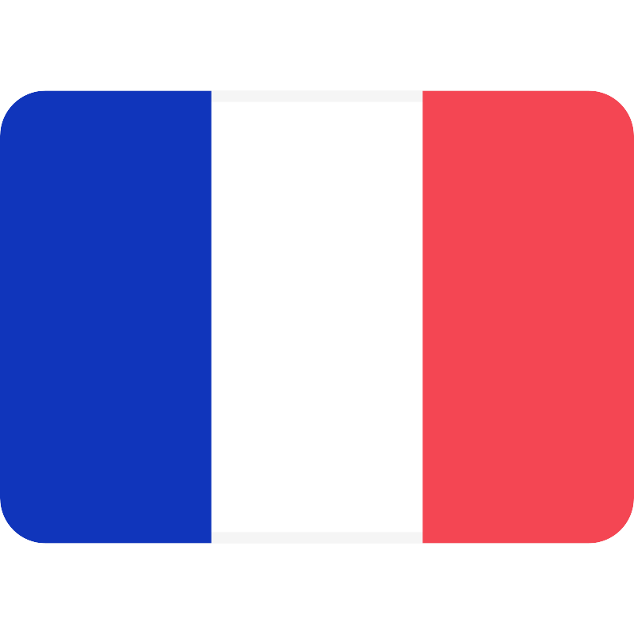
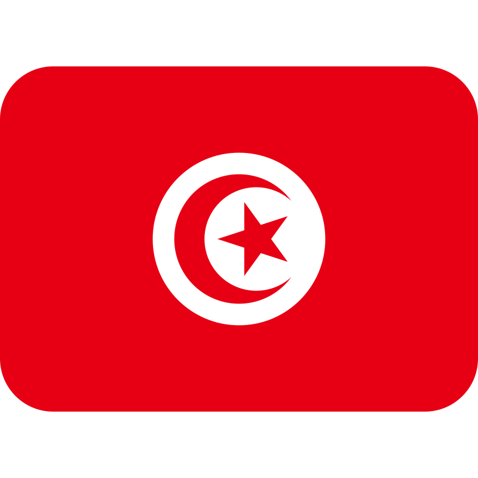

Mohamed Salah Najar
📍 Jemmel, Tunisie
🎯 Objectif Professionnel
Passionné par l'innovation et le génie industriel, je souhaite poursuivre mes études à l'ENSGSI pour devenir ingénieur en génie des systèmes et de l'innovation. Mon objectif est de contribuer à l'optimisation des processus industriels et à la création de solutions innovantes qui améliorent la performance des organisations. À long terme, je souhaite devenir consultant en innovation ou chef de projet dans une grande entreprise industrielle.
Mon parcours académique
École TAIEB MEHIRI Jemmel
École primaire
Collège Mahmoud El MESSADI Jemmel
Collège
Lycée de Jemmel
Baccalauréat Mathématiques
Activités extrascolaires et bénévolat
Les Scouts Tunisiens
Membre
Journée de vaccination et sensibilisation contre le Covid-19
Participant à la journée de vaccination et de sensibilisation contre le Covid-19 à Hammam-Lif, en collaboration avec le Croissant-Rouge tunisien et Atiost.
Campagne de nettoyage du Lycée Jemmel
Participant
Campagne de dons pour les personnes dans le besoin dans la ville de Jemmel
Membre
Mes compétences
Python
HTML
CSS
JavaScript

Français

Anglais

Espagnol
